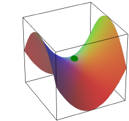
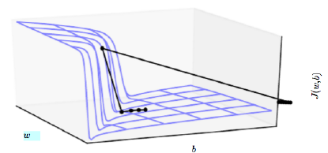
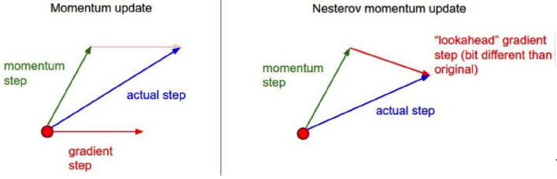

1 Gradient Descent using Backpropagation
set \Delta W^{(l)}:=0,\Delta b^{(l)}:=0 (matrix/vector of zeros) for all l
For i = 1 to m
- Use backpropagation to compute \nabla_{\theta^{(l)}}J(\theta;X,y)
- Set \Delta\theta^{(l)}:=\Delta\theta^{(l)}+\nabla_{\theta^{(l)}}J(\theta;X,y)
Update the parameters: \begin{align*} W^{(l)}&=W^{(l)}-\alpha\left[\left(\frac{1}{m}\Delta W^{(l)}\right)+\lambda W^{(l)}\right]\\ b^{(l)}&=b^{(l)}-\alpha\left[\frac{1}{m}\Delta b^{(l)}\right] \end{align*}
Repeat for all data points until convergence.
- Iteration: When weight is updated then it is called one iteration.
- Epoch : When training is done at least once on the whole data set then it is called one epoch.
- Convex objective function has One global minima but Non convex objective function has many local minima.
- Note
The neural network with more than one layer has cost function which is almost always non convex, even if there is no activation function on any layer, it may sound non intuitive at first but it will become clear as we explore on this topic.
2 Local Minima
- The non-identifiability problem results in multiple equivalent local minima → Not problematic though, since cost function value is the same
- If there are local minima with significant different cost value then that could be a problem.
- It’s not required to find the true global minimum, recent work shows that even finding the parameter space which has low but not global minimum cost is enough.
- Note
Plot the norm of the gradient over time. If the norm is very small, it is likely to be a local minimum (or a critical point).
3 Saddle Points and Plateaus
- If there is local minima across one cross section of cost function and local maxima across another cross section of the cost function then it is called a saddle point.
 - In higher dimension space there are more saddle points than local minima.
- If there is a steep decline in the cost then it is called Cliff area. Search types of clips are very much possible in RNN because in such networks there are a lot of multiplication (over time) and when small terms multiplies many times then it becomes even smaller which causes cliffs.

4 Vanishing/Exploding Gradient
- While doing gradient descent if the smaller number multiplies many times it becomes even smaller and it causes vanishing gradient problem in very deep neural network.
- If the activation function has more steep slope or it has narrow range then it can cause vanishing gradient problem, One such example is sigmoid activation function.
- In the same way there may happen exploding gradient issue if the number is greater than one while doing gradient descent.
5 Challenges
- Cost functions are often high dimensional non quadratic non convex,There can be many minima shadow points and also many flat regions,
- There is no guarantee that a network will converge to an optimal point or it will converge at all.
- Most of the time problems are ill conditioned,
- The gradient can be inexact.
- Power correspondence between local and global structure.
- We need to hyper tune learning rate and many other parameters.
6 How to address
There are many techniques which can help address this issue up to some extent.
Algorithmic approach.
- Batch gradient descent, stochastic gradient descent, mini batch gradient descent.
- Momentum based methods Nestrov momentum.
- Adagrad, Adadelta, RMSprobe, Adam.
- Other advanced optimization methods.
Practical tricks.
- Regularization method such as dropout.
- Data manipulation methods.
- Parameter in slicing method.
Batch gradient descent: In this method we compute the gradient for entire training set and then we update the parameters or weights.
Stochastic gradient descent: In this method we first randomly shuffle the training set and then we compute the gradient for each and every training example and update the parameter or weights.
Mini batch Stochastic gradient descent: In this method we first draw a mini batch from randomly shuffled data set. And we compute the gradient for this mini batch and update the parameter or weights.
Advantage of Stochastic gradient descent:
- It is faster than batch gradient descent because there is redundancy in the batch.
- Open results in more better than generalised solution because of the noisy update of the weight.
- This method can be useful where we need to track the system overtime. We can update the weight stochastically.
Issue with Stochastic gradient descent:
- Sometimes noise in stochastic gradient descent may lead to no convergence at all.
- Equivalent to use of “mini-batches” in SGD (Start with a small batch size and increase size as training proceeds.
- Can be controlled using learning rate.
Advantages of Batch GD
- Conditions of convergence are well understood.
- Many acceleration techniques (e.g. conjugate gradient) only operate in batch learning.
- Theoretical analysis of the weight dynamics and convergence rates are simpler.
- Tip
Mini-batch SGD is the most commonly used method, with a mini-batch size of 20 or so (can be higher depending on dataset size).
7 Momentum
Weight update is given by
\Delta\theta_{t+1}=\alpha\nabla_{\theta}J(\theta_{t};x^{(i)},y)^{(i)}+ \overbrace{\boxed{\gamma \Delta \theta _t}}^{\text{Momentum term}}
- Can increase speed when the cost surface is highly non-spherical.
- Damps step sizes along directions of high curvature, yielding a larger effective learning rate along the directions of low curvature.
- Note
Here the idea is that, if we are going in one direction, we build a momentum to that direction, so if there is a sudden change in the direction, we do not suddenly change the direction but go for a average as per the above equation.
- Larger the \gamma, more the previous gradients affect the current step.
- Generally \gamma is set to 0.5 until initial learning stabilizes and then increased to 0.9 or higher.
8 SGD with Momentum
Assume:
Learning rate \alpha
momentum parameter \gamma
minibatch size m
Initial weights \theta_t
- while stopping criterion not met do
- Sample a minibatch of m examples from the training set.
- Compute gradient estimate {\nabla}_{\theta}{\sum}_{i=1}^{m}J({\theta}_{t};X^{(i)},y^{(i)})
- Compute update \Delta\theta_{t+1}=\alpha\nabla_{\theta}J+\gamma\Delta\theta_{t}
- Apply update \theta_{t+1}=\theta_{t}-\Delta\theta_{t+1}
- End while
Alternate view of momentum update
\overbrace{\mathrm{v}_{t+1}}^{\text{Velocity }} =\gamma \times \overbrace{\mathrm{v}_{t}}^{\text{past velocity}} +\alpha\nabla_{\theta}J(\theta_{t};X^{(i)},y^{(i)})
9 Nesterov Accelerated Momentum
In this method weight update is given as below. \begin{align*} \mathrm{v}_{t+1}&=\gamma\mathrm{v}_{t}+\alpha\nabla_{\theta}J(\boxed{\theta_{t}-\gamma\mathrm{v}_{t}} ;X^{(i)},y^{(i)})\\ \theta_{t+1}&=\theta_{t}-\mathrm{v}_{t+1} \end{align*}
Here intuition behind the term \boxed{\theta_{t}-\gamma\mathrm{v}_{t}} is that, If you know the stock market price for tomorrow, we can do much better on stocks. In the same way we take a step forward and find the cost and then compute derivative, so that we can do better.
In general, this method performs better.

10 SGD with Nesterov Momentum
Learning rate \alpha
momentum parameter \gamma
minibatch size m
Initial weights \theta_t Initial velocity v_t
- while stopping criterion not met do
- Sample a minibatch of m examples from the training set.
- Apply interim update \tilde{\theta}_{t}=\theta_{t}-\gamma\bf{v}_{t}
- Compute gradient estimate {\nabla}_{\theta}{\sum}_{i=1}^{m}J(\tilde{\theta}_{t};X^{(i)},y^{(i)})
- Compute update {\bf v_{t+1}}=\gamma{\bf v}_{t}+\alpha\nabla_{\theta}\Sigma_{i=1}^{m}J(\tilde{\theta}_{t};x^{(i)},y^{(i)})
- Apply update \theta_{t+1}=\theta_{t}-\bf v_{t+1}
- End while
Momentum parameter (\gamma): Weightage given to earlier steps taken in the process of gradient descent.
11 Adaptive Learning Rate Methods: Adagrad
Global Learning rate \alpha
minibatch size m
Initial weights \theta_t
Small constant \delta near to 10^{-7} for numerical stability
- Initialize gradient accumulation variable \mathbf{r=0}
- while stopping criterion not met do
- Sample a minibatch of m examples from the training set.
- Compute gradient estimate {\nabla}_{\theta}{\sum}_{i=1}^{m}J({\theta}_{t};X^{(i)},y^{(i)})
- Compute squared gradient {\bf r}={\bf r}+(\nabla_{\theta}J\;\odot\;\nabla_{\theta}J)
- Compute update \displaystyle \Delta\theta_{t+1}={\frac{\alpha}{\delta+\sqrt{\bf r}}}\ \odot \ \nabla_\theta J (division and square root computed elementwise)
- Apply update \theta_{t+1}=\theta_{t}-\Delta\theta_{t+1}
- End while
- Intuition
- Calculates a different learning rate for each feature.
- Sparse features have higher learning rate.
12 RMSProp
Global Learning rate \alpha
Decay rate \rho
minibatch size m
Initial weights \theta_t
Small constant \delta near to 10^{-6} for numerical stability
- Initialize gradient accumulation variable \mathbf{r=0}
- while stopping criterion not met do
- Sample a minibatch of m examples from the training set.
- Compute gradient estimate {\nabla}_{\theta}{\sum}_{i=1}^{m}J({\theta}_{t};X^{(i)},y^{(i)})
- Accumulate squared gradient {\bf r}=\rho{\bf r}+(1-\rho)(\nabla_{\theta}J\;\odot\;\nabla_{\theta}J)
- Compute update \displaystyle \Delta\theta_{t+1}={\frac{\alpha}{\delta+\sqrt{\bf r}}}\ \odot \ \nabla_\theta J (division and square root computed elementwise)
- Apply update \theta_{t+1}=\theta_{t}-\Delta\theta_{t+1}
- End while
- Intuition
- Calculates a different learning rate for each feature.
- Sparse features have higher learning rate.
- Now we can control the accumulation using \rho.
13 RMSProp with Nesterov Momentum
Global Learning rate \alpha
Decay rate \rho
Momentum co-efficient \gamma
Inital velocity \bf v
minibatch size m
Initial weights \theta_t
Small constant \delta near to 10^{-6} for numerical stability
- Initialize gradient accumulation variable \mathbf{r=0}
- while stopping criterion not met do
- Sample a minibatch of m examples from the training set.
- Apply interim update \tilde{\theta}_{t}=\theta_{t}-\gamma\bf{v}_{t}
- Compute gradient estimate {\nabla}_{\theta}{\sum}_{i=1}^{m}J(\tilde{\theta}_{t};X^{(i)},y^{(i)})
- Accumulate squared gradient {\bf r}=\rho{\bf r}+(1-\rho)(\nabla_{\theta}J\;\odot\;\nabla_{\theta}J)
- Compute update \displaystyle \Delta\theta_{t+1}={\frac{\alpha}{\delta+\sqrt{\bf r}}}\ \odot \ \nabla_\theta J (division and square root computed elementwise)
- Apply update \theta_{t+1}=\theta_{t}-\Delta\theta_{t+1}
- End while
14 Adam
Global Learning rate \alpha
Decay rates for moment estimate \rho_1 and \rho_2
Momentum co-efficient \gamma
minibatch size m
Initial weights \theta_t
Small constant \delta near to 10^{-8} for numerical stability
- Initialize first and second moment variables \mathbf{r=0} and \mathbf{s=0}
- while stopping criterion not met do
- Sample a minibatch of m examples from the training set.
- Compute gradient estimate {\nabla}_{\theta}{\sum}_{i=1}^{m}J({\theta}_{t};X^{(i)},y^{(i)})
- Update biased first moment estimate {\bf s}=\rho_1{\bf s}+(1-\rho_1)\nabla_{\theta}J
- Update biased second moment estimate {\bf r}=\rho_2{\bf r}+(1-\rho_2)(\nabla_{\theta}J\;\odot\;\nabla_{\theta}J)
- Correct bias in first moment \displaystyle \tilde{\bf s}=\frac{\bf s}{1-\rho_1^t}
- Now Correct bias in second moment \displaystyle \tilde{\bf r}=\frac{\bf r}{1-\rho_2^t}
- Compute update \displaystyle \Delta\theta_{t+1}={\alpha\frac{\tilde{\bf s}}{\delta+\sqrt{\tilde{\bf r}}}}\ \odot \ \nabla_\theta J (division and square root computed elementwise)
- Apply update \theta_{t+1}=\theta_{t}-\Delta\theta_{t+1}
- End while
- Intuition
- Similar to RMSProp with momentum
- Uses the idea of momentum, as well as having a different learning rate for each dimension (which is automatically adjusted, as in Adagrad, Adadelta or RMS)
15 Interesting Facts
Interesting Facts
- If input data is sparse, adaptive learning-rate methods may be best.No need to tune learning rate
- Learning rates diminish fast in Adagrad, RMSProp addresses this issue.
- Adam adds bias-correction and momentum to RMSprop.
- RMSprop, Adadelta, and Adam are similar algorithms, bias-correction helps Adam slightly outperform RMSprop towards the end of optimization as gradients become sparser
- Adam might be the best overall choice (May not be always true!)
- Vanilla SGD depends on a robust initialization and annealing schedule, and may get stuck in saddle points rather than local minima.
- Many recent papers use vanilla SGD without momentum, but with a simple learning rate annealing schedule
- Some standard choices for training deep networks: SGD + Nesterov momentum, SGD with Adagrad/RMSProp/Adam.
- ReLUs, Leaky ReLUs and MaxOut are the best bets for activation functions
16 Activation Functions
- Sigmoid
- This function takes any real value as input and outputs values in the range of 0 to 1.
- Formulae : f(x)=\frac{1}{1+e^{-x}}
- It is commonly used for models where we have to predict the probability as an output. Since probability of anything exists only between the range of 0 and 1, sigmoid is the right choice because of its range.
- Tanh Function
- It’s output range is -1 to 1.
- Formulae : f(x)=\frac{e^{x}-e^{-x}}{e^{x}+e^{-x}}
- The output of the tanh activation function is Zero centered; hence we can easily map the output values as strongly negative, neutral, or strongly positive.
- Usually used in hidden layers of a neural network as its values lie between -1 to 1; therefore, the mean for the hidden layer comes out to be 0 or very close to it. It helps in centering the data and makes learning for the next layer much easier.
- Note
Although both sigmoid and tanh face vanishing gradient issue, tanh is zero centered, and the gradients are not restricted to move in a certain direction. Therefore, in practice, tanh nonlinearity is always preferred to sigmoid nonlinearity.
- ReLU
- The neurons will only be deactivated if the output of the linear transformation is less than 0.
- Formulae : f(x)=\max(0,x)
- Since only a certain number of neurons are activated, the ReLU function is far more computationally efficient when compared to the sigmoid and tanh functions.
- ReLU accelerates the convergence of gradient descent towards the global minimum of the loss function due to its linear, non-saturating property.
- Found to accelerate convergence of SGD compared to sigmoid/tanh functions (a factor of 6) in AlexNet
- It has the The Dying ReLU problem
- The negative side of the graph makes the gradient value zero. Due to this reason, during the backpropagation process, the weights and biases for some neurons are not updated. This can create dead neurons which never get activated.
- All the negative input values become zero immediately, which decreases the model’s ability to fit or train from the data properly.
- Leaky ReLU
- Leaky ReLU is an improved version of ReLU function to solve the Dying ReLU problem as it has a small positive slope in the negative area.
- formula: f(x)=\max(0.1x,x)
- The predictions may not be consistent for negative input values.
- The gradient for negative values is a small value that makes the learning of model parameters time-consuming.
- Parametric ReLU
- formula: f(x)=\max(ax,x)
- Parametric ReLU is another variant of ReLU that aims to solve the problem of gradient’s becoming zero for the left half of the axis.
- This function provides the slope of the negative part of the function as an argument a. By performing backpropagation, the most appropriate value of a is learnt.
- The parameterized ReLU function is used when the leaky ReLU function still fails at solving the problem of dead neurons, and the relevant information is not successfully passed to the next layer.
- Exponential Linear Units (ELUs)
- ELU uses a log curve to define the negativ values unlike the leaky ReLU and Parametric ReLU functions with a straight line.
- formula: f(x) = \begin{cases} x &\text{if } x \ge 0 \\ \alpha(e^x-1) &\text{if } x<0 \end{cases}
- ELU becomes smooth slowly until its output equal to \alpha whereas RELU sharply smoothes.
- Avoids dead ReLU problem by introducing log curve for negative values of input. It helps the network nudge weights and biases in the right direction.
- No learning of the \alpha value takes place
- Softmax
- It is used for multiclass classification.
- formula: f(x_i)=\frac{e^{x_i}}{\sum_{j}e^{x_j} }
- swish
- Formulae : f(x)=\frac{x}{1+e^{-x}}
- Swish is a smooth function that means that it does not abruptly change direction like ReLU does near x = 0. Rather, it smoothly bends from 0 towards values < 0 and then upwards again.
- The swish function being non-monotonous enhances the expression of input data and weight to be learnt.
- Max Out
- It is generalization of ReLU.
- formula: f(x)=\max(w_1^Tx+b_1,w_2^Tx+b_2)
Guide-Line to Chose activation Function
- Regression — Linear Activation Function
- Binary Classification — Sigmoid/Logistic Activation Function
- Multiclass Classification — Softmax
- Multilabel Classification — Sigmoid
- ReLU activation function should only be used in the hidden layers.
- Sigmoid/Logistic and Tanh functions should not be used in hidden layers as they make the model more susceptible to problems during training (due to vanishing gradients)
- Swish function is used in neural networks having a depth greater than 40 layers.
- Try tanh, but expect it to work worse than ReLU/Maxout.
17 Loss Functions
- Cross-Entropy Loss Function
- Formula J=-\frac{1}{m}\sum_{i=1}^{m}y_{i}\log\hat{y_{i}}+(1-y_{i})\log(1-\hat{y_{i}})
- If the activation function is sigmoid \left(\sigma(z)=\,\frac{1}{1+e^{-z}}\right) the darivative of cross-entropy is:
so,
\hat y=\sigma(w^Tz) \text{ and } \sigma(z)=\frac{1}{1+e^{-z}} so we can simplify it as below considering just one record J = -\frac{1}{m}\sum_{i=1}^{m} \left(y\log(\sigma(z))+(1-y)\log(1-\sigma(z))\right) Now we find derivative \begin{align*} \frac{\partial J}{\partial w_j} &= -\frac{1}{m}\sum_{i=1}^{m} \left(y \frac{1}{\sigma(z)}\sigma(z)'x_j+(1-y) \left( \frac{1}{1-\sigma(z)}\right) (-\sigma(z)'x_j)\right) \\ &=-\frac{1}{m}\sum_{i=1}^{m}\left( \frac{y}{\sigma(z)}- \frac{1-y}{1-\sigma(z)}\right) \sigma(z)'x_j \\ &= -\frac{1}{m}\sum_{i=1}^{m}\frac{y(1-\sigma(z))-\sigma(z)(1-y)}{\sigma(z)(1-\sigma(z))}\sigma(z)'x_j \\ &= -\frac{1}{m}\sum_{i=1}^{m}\frac{y-y*\sigma(z)-\sigma(z)+\sigma(z)*y}{\sigma(z)(1-\sigma(z))}\sigma(z)'x_j \\ &= -\frac{1}{m}\sum_{i=1}^{m}\frac{y-\sigma(z)}{\sigma(z)(1-\sigma(z))}\sigma(z)(1-\sigma(z))*x_j \\ &=-\frac{1}{m}\sum_{i=1}^{m}(y-\sigma(z))*x_j\\ &=\frac{1}{m}\sum_{i=1}^{m}(\sigma(z)-y)*x_j \end{align*} - Even if we consider softmax as activation function \left(a_{j}^{L}=\frac{e^{z_{j}^{L}}}{\sum_{k}e^{z_{k}^{L}}}\right) we get similar derivative \frac{\partial J}{\partial w_{j k}^{L}}=\overbrace{\boxed{a_{k}^{L-1}(a_{j}^{L}-y_{j})}}^{\text{similar to cross entropy}}
18 Torch Loss function
- Classification
- BCECriterion: binary cross-entropy for Sigmoid (two-class version)
- ClassNLLCriterion: negative log-likelihood (multi-class)
- MarginCriterion: two class margin-based loss
- Regression
- AbsCriterion: measures the mean absolute value of the element wise difference between input
- MSECriterion: mean square error (a classic)
- DistKLDivCriterion: Kullback–Leibler divergence (for fitting continuous probability distributions)
- Embedding (measuring whether two inputs are similar or dissimilar)
- L1HingeEmbeddingCriterion: L1 distance between two inputs
- CosineEmbeddingCriterion: cosine distance between two inputs
\tiny {\textcolor{#808080}{\boxed{\text{Reference: Dr. Vineeth, IIT Hyderabad }}}}